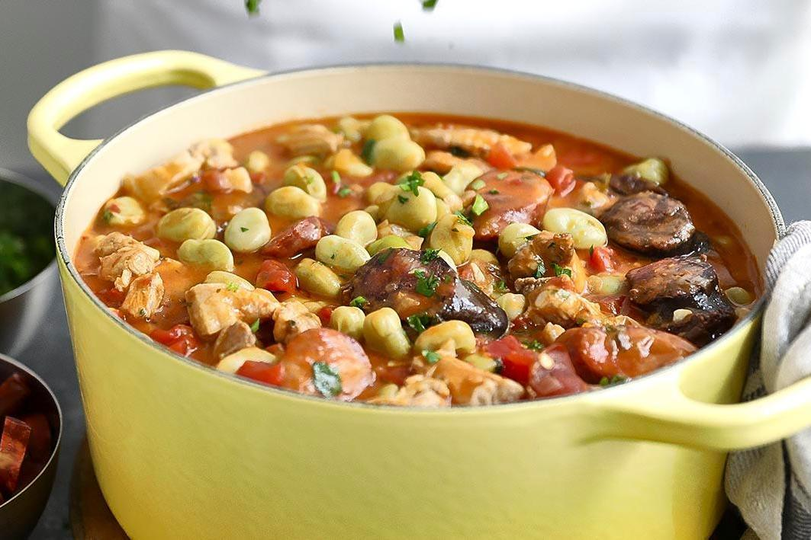

Beans with Chorizo

The most popular way to prepare favas is a stew that combines the beans with various meats. This recipe is highly adaptable, as you can add the type of smoked sausages and meats that you like the best.
Ingredients
- 4 kg favas, unpeeled
- 100g bacon
- 1 small chouriço de carne
- 100g smoked ham
- 2 onions
- 2 cloves of garlic